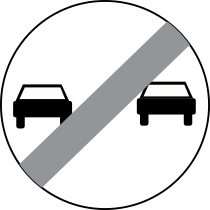

Loading...

End of the no overtaking restriction
🚫 Regulatory Signs
📖 Description
This sign indicates that the previous no‑overtaking restriction has ended. Drivers may overtake again, but only if the maneuver can be completed safely and without obstructing oncoming traffic.